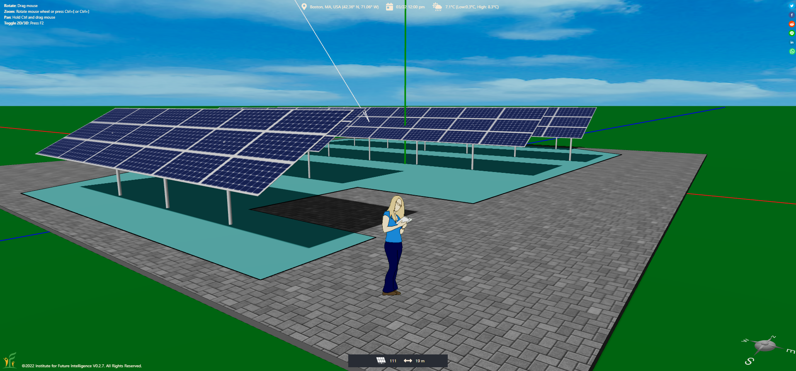

Designing a Solar Farm with AI
Students design a cost-effective solar farm in Aladdin, run multiple iterations, and receive AI feedback to refine their solutions.
Solar farms are typically arrays of solar panels that can produce a large amount of renewable energy. The design of a cost-effective solar farm presents a unique opportunity for students to practice their engineering design skills and apply their scientific knowledge to solving a real-world challenge. In this unit, students will explore the design criteria, constraints, and variables of a solar farm, create multiple design iterations, and propose a solar farm design that will generate the maximum yearly profit. They will also receive design feedback from AI and try to further improve their design.
Learning Goals
After finishing this unit, students will be able to:
- Evaluate a design solution using the given criteria and constraints
- Collect evidence of the design performance using computer simulations
- Improve the design performance through iterations
- Create a design that meets the given criteria and constraints
- Explain the choice of design variables using scientific principles

Prerequisites
Before starting this unit, it is recommended that students have already completed the Solar Energy Science Unit and gained some familiarity with key features of Aladdin (such as the heliodon).
Student Documents
Solar Farm Design Instruction
Solar Farm Design Journal
Customizations
To make the design experience more relevant for students, teachers can model a real-world solar farm near their schools in Aladdin using its Google Maps integration and the layout wizard.
Related Educational Standards
The Next Generation Science Standards (NGSS): MS-ETS-1, HS-ETS-1
Acknowledgements
The development of this curriculum unit is supported by the National Science Foundation (NSF) under grant numbers #2131097 and #2301164. Any opinions, findings, and conclusions or recommendations expressed in this material, however, are those of the authors and do not necessarily reflect the views of NSF.